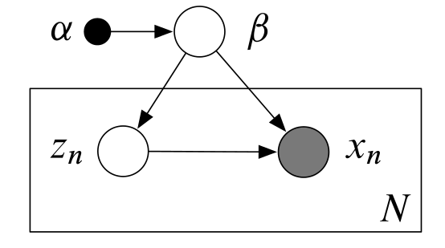
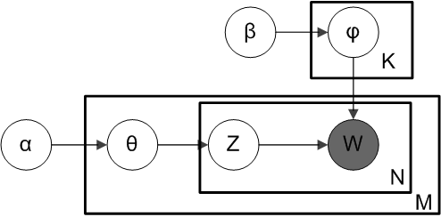

By now it has become very clear that Latent Dirichlet Allocation (LDA) has a variety of valuable, real-world use cases. However, most real-world use cases involve large volumes of data which can be problematic for LDA. This is because both of the traditional implementations of LDA (variational inference and collapsed Gibbs sampling) require the entire corpus (or some encoding of it) to be loaded into main memory. Obviously, if you are working with a single machine and a data set that is sufficiently large, this can be infeasible. One solution is to parallelize the algorithm and scale out until you have the required resources. However, this presents an entire new set of problems - acquiring a cluster of machines, modifying your LDA code such that it can work in a MapReduce framework, etc. A much better solution would be to segment your large data set into small batches and sequentially read each of these batches into main memory and update your LDA model as you go in an online fashion. This way you are only keeping a small fraction of your large data set in main memory at any given time. Furthermore, consider a scenario where your corpus is constantly growing such as an online discussion forum. As your corpus grows you want to see how the topics are changing. With traditional variational inference you would have to rerun the entire batch algorithm with the old data and the new data but it would be much more efficient to simply update your model with only the new data. In their paper Online Learning for Latent Dirichlet Allocation, Blei et al. present an algorithm for achieving this kind of functionality. This blog post aims to give a summary of this paper and also show some results from my own Scala implementation.
Variational Inference vs Stochastic Variational Inference
Let's start off with a very general graphical model that includes observations, local hidden variables, and global hidden variables.

In the above graphical model, there are \(N\) observations \(x_{1:N}\) and one local hidden variable for each observation \(z_{1:N}\). There are also global hidden variables \(\beta\) with a known prior \(\alpha\). I will first compare variation inference with stochastic variational inference in the context of this graphical model because it can be generalized to a variety of different graphical models with local and global hidden variables e.g. the LDA model, Gaussian mixture models, hidden Markov models and many more.
The joint distribution of this graphical model is
\(p(x,z,\beta | \alpha)=p(\beta | \alpha)\prod_{n=1}^Np(x_n,z_n | \beta)\)
Also, our assumption that \(\beta\) are the global parameters and \(z_n\) are the local parameters is formalized by the fact that the observation \(x_n\) and the corresponding local variable \(z_n\) are conditionally independent given the global variables \(\beta\) i.e.
\(p(x_n,z_n|x_{-n},z_{-n},\beta,\alpha)=p(x_n,z_n|\beta,\alpha)\)
Another assumption that we make in this model is that the conditional distributions of the hidden variables given the observations and other hidden variables (also called the complete conditionals) are in the exponential family which means they take the general form
\(p(\beta | x,z,\alpha)=h(\beta)\exp(\eta_g (x,z,\alpha)^Tt(\beta)-a_g(\eta_g(x,z,\alpha)))\)
\(p(z_{nj}|x_n,z_{n,-j},\beta)=h(z_{nj})\exp(\eta_l(x_n,z_{n,-j},\beta)^Tt(z_{nj})-\alpha_l(\eta_l(x_n,z_{n,-j},\beta)))\)
Where \(h(.)\) is called the base measure, \(a(.)\) is called the log-normalizer, \(\eta(.)\) is called the natural parameter, and \(t(.)\) is called the sufficient statistics. Furthermore, we also assume that the prior distribution over \(\beta\) is part of the exponential family.
\(p(\beta)=h(\beta)\exp(\alpha^Tt(\beta)-a_g(\alpha))\)
The main goal is to compute the posterior distribution of the hidden variables given the observed variables
$$p(\beta,z|x)=\frac{p(x,z,\beta)}{\int p(x,z,\beta)dz d \beta}$$
Unfortunately, the denominator \(\int p(x,z,\beta)dz d \beta\) is intractable to compute so we must use approximate inference techniques such as variational inference.
Variational Inference
Variational inference turns the inference problem into an optimization problem. A new distribution over the hidden variables \(q(z,\beta)\) (called the variational distribution) is introduced. This new distribution has properties such that it can be efficiently computed. The variational distribution is a function of a set of free parameters that are optimized such that the variational distribution is as close as possible to the actual target posterior distribution where closeness is measured in terms of KL divergence. Minimizing the KL divergence between the variational distribution and the target posterior is equivalent to maximizing the evidence lower bound (ELBO) (proof not shown here) which is
$$\mathscr{L}(q)=E_q[\log p(x,z,\beta)]-E_q[\log q(z,\beta)]$$
As stated earlier, the variational distribution has the property that it can be efficiently computed. This is done by making each hidden variable independent of each other.
\(q(z,\beta)=q(\beta|\lambda)\prod_{n=1}^N \prod_{j=1}^J q(z_{nj}|\phi_{nj})\)
Furthermore, each hidden variable is governed by its own variational parameter so the variational parameters \(\lambda\) governs the global variables \(\beta\) and the variational parameters \(\phi_n\) govern the local variables \(z_n\). \(q(\beta | \lambda)\) and \(q(z_{nj} | \phi_{nj})\) take the same form as the complete conditionals \(p(\beta | x,z,\alpha)\) and \(p(z_{nj}|x_n,z_{n,-j},\beta)\), but the natural parameters are now \(\lambda\) and \(\phi_{nj}\), respectively to give
\(q(\beta | \lambda)=h(\beta)\exp(\lambda^Tt(\beta)-a_g(\lambda))\)
\(q(z_{nj}|\phi_{nj})=h(z_{nj})\exp(\phi_{nj}^Tt(z_{nj})-a_l(\phi_{nj}))\)
We maximize the ELBO objective function with a coordinate ascent procedure. We find its gradient with respect to the global variational parameter \(\lambda\) and find the value of \(\lambda\) that sets the gradient to zero. We do the same thing for the local parameters \(\phi_{n}\). We iterate between these updates until we converge to the maximum of the ELBO. The updates are given without proof, but the general procedure is to write the ELBO in terms of parameter of interest (either \(\lambda\) or \(\phi_n\)) then take the gradient and set it to zero.
$$\lambda=E_q[\eta_g(x,z,\alpha)]$$
$$\phi_{nj}=E_q[\eta_l(x_n,z_{n,-j},\beta)]$$
Therefore the updates of each variational parameter are equal to the expected value of the natural parameters of the complete conditionals. The complete coordinate ascent algorithm is given below.
As you can see, in the local parameter update (steps 3 and 4), we have to iterate over every data point in the data set which is computationally expensive and (as we will see later) not necessary.
Stochastic Variational Inference
Stochastic variational inference uses a stochastic optimization technique to sequentially maximize the ELBO using unbiased samples from the data set. Updates are performed with the following formula
\(\lambda^{(t)}=\lambda^{(t-1)}+\rho_tb_t(\lambda^{(t-1)})\)
where \(b_t\) is a noisy (but unbiased) gradient of the objective function obtained from a subsample of the data set. If the step size \(\rho_t\) satisfies the following constraints
\(\sum \rho_t=\infty\), \(\sum \rho_t^2 < \infty\)
then it is guaranteed to converge to the global optimum \(\lambda^*\) if the objective function is convex, or a local optima if it is not convex. Now let's look at how this noisy gradient can be computed for a single data point. First we write the ELBO in terms of a global term and a sum of local terms.
\(\mathcal{L}(\lambda)=E_q[\log p(\beta)]-E_q[\log q(\beta)]+\sum^N_{n=1}\max(E_q[\log p(x_n,z_n | \beta)]-E_q[\log q(z_n)])\)
Consider a randomly chosen data point index \(I\) sampled from \(Unif(1,...,N)\). For this data point \(x_{I}\) let us define
\(\mathcal{L}_I(\lambda)=E_q[\log p(\beta)]-E_q[\log q(\beta)]+N \max(E_q[\log p(x_I,z_I | \beta)]-E_q[\log q(z_I)])\)
This is equivalent to the original ELBO if the entire data set was made up of \(x_{I}\). There are two important facts that one must understand about \(\mathcal{L}_I(\lambda)\)
The expectation of \(\mathcal{L}_I(\lambda)\) with respect to the data point \(x_{I}\) is equivalent to the original ELBO.
As a consequence, the gradient of \(\mathcal{L}_I(\lambda)\) can be thought of as a noisy gradient of the original ELBO because it is unbiased.
However, we do not want to take the usual gradient of \(\mathcal{L}_I(\lambda)\). Instead we want to take the natural gradient. The usual gradient assumes that the parameter space is Euclidean but it turns out that it is better to assume that it has a Riemannian metric structure (in the context of minimizing KL divergence) which is what the natural gradient does. A full explanation of the natural gradient is beyond the scope of this blog post but this paper by Amari gives a good overview. The The natural gradient of \(\mathcal{L}_I(\lambda)\) is
\(\nabla \mathcal{L}_i=E_q[\eta_g(x_i^{(N)},z_i^{(N)},\alpha)]-\lambda\)
and setting this gradient to zero gives the update
$$\lambda=E_q[\eta_g(x_i^{(N)},z_i^{(N)},\alpha)]$$
The full algorithm is shown below
The procedure consists of sampling a single data point then finding the optimal local parameters for that data point then updating the global variational parameters under the assumption that the entire dataset consisted of \(N\) replicas of that data point. Then this "intermediate" global variational parameter is combined with the previous "overall" global parameter via a weighted average to produce a new "overall" global parameter. In this way, the global parameters can be updated after each sample is seen, rather than once after each iteration over the entire data set as in traditional variational inference (however, in pactice "mini-batches" of data points are used rather than a single point). Now let's finally see how we can apply stochastic variational inference to Latent Dirichlet Allocation to get a scalable online learning algorithm.
Stochastic Variational Inference and LDA
Topic models aim to uncover the hidden thematic coherent topics that exist in a corpus of documents. The most popular topic model is Latent Dirichlet Allocation (LDA). In LDA, documents are thought of as distributions over topics and the topics themselves are distributions over words. The graphical model for LDA can be thought of as a special case of the general graphical model shown earlier. In the case of LDA, the global parameters are the topic distributions \(\beta\) which all documents depend on and the local parameters are the document-topic proportions \(\theta\) which are independent between documents and \(Z\) the topic assignments for each word in the document. So, in this context, "local" refers to document-specific variables and "global" refers to corpus-specific variables. The observed variables are the words that appear in each document (in bag-of-words format). LDA is explained in greater detail in my previous blog post on the subject but here is the graphical model as a reminder.

In terms of notation, let's assume there are \(N\) unique words in the vocabulary, \(D\) documents in the corpus, and \(K\) topics. The next step is defining the complete conditionals for the LDA model (i.e. the distributions of each variable given all of the other variables both hidden and observed). The complete conditionals for the local topic assignments \(Z\), the local topic proportions \(\theta\), and global topic distributions \(\beta\) are
\(p(z_{dn} | \theta_d,\phi_{1:K},w_{dn}) \propto \exp(\log \theta_{dk} + \log \beta_{k,w_{dn}})\)
\(p(\theta_d | z_d)=Dirichlet(\alpha+\sum^N_{n=1}z_{dn})\)
\(p(\beta_k | z,w)=Dirichlet(\eta +\sum^D_{d=1} \sum^N_{n=1}z^k_{dn}w_{dn})\)
where \(d\) is the document index in the corpus, \(n\) is the word index in the vocabulary, and \(k\) is the topic index. As you can see, the complete conditionals of the local variables only depend on other local variables from the same local context (i.e. the same document) and the global variables, they do not depend on local variables from other documents. As per mean-field variational inference, the variational distributions for these variables take the same form as their complete conditionals, that is
\(q(z_{dn})=Multinomial(\phi_{dn})\)
\(q(\theta_d)=Dirichlet(\gamma_d)\)
\(q(\beta_k)=Dirichlet(\lambda_k)\)
Next we find the updates for each of these variational parameters by taking the expectation of the natural parameters of the complete conditionals which are
$$\phi^k_{dn}=\exp(\Psi(\gamma_{dk})+\Psi(\lambda_{k,w_{dn}})-\Psi(\sum_v \lambda_{kv}))$$
$$\gamma_d=\alpha + \sum^N_{n=1}\phi_{dn}$$
$$\lambda_k=\beta+\sum^D_{d=1} \sum^N_{n=1}\phi^k_{dn}w_{dn}$$
Now let's use the procedure mapped out in the stochastic variational inference algorithm which is to first randomly sample a document from the corpus then update the local variational parameters \(\phi\) (the topic assignments for each word) and \(\gamma\) (the topic proportions for the document) for this document. Then we update the variational parameters for the global topic distribution for that sampled document \(\lambda\). Then we merge the global parameter for the sampled document with the overall global parameter (with an update weighted by \(\rho_t\)). We repeat this procedure until we think that convergence has occurred. This procedure is better illustrated below.

Experimental Results
Scala code that implements stochastic variational inference for LDA can be found in this github repo (warning! experimental so use at your own risk). In this experiment, we are using the NIPS dataset which consists of the abstracts of 1,736 NIPS papers however this algorithm could handle a much larger data set than this. The following Scala code shows how we run this experiment.
//set location of directory containing data
val docDirectory = "NIPS_dataset/"
//create vocabulary from data with minimum frequency cutoff of 10
val testVocab = CountVocab(docDirectory, 10).getVocabulary
//create a corpus object that can be streamed into online LDA model
val testCorpus = new StreamingCorpus(testVocab, 5, docDirectory)
//create online LDA model object with 5 topics, a decay of 0.5 and 1736 documents
val oldaTest = new OnlineLDA(testCorpus, 5, 0.5, 1736)
//learn the model
oldaTest.inference()
//show the topics by displaying the 10 most probable words in each topic
oldaTest.printTopics(10)
The resulting topics are shown below
Topic 1: state, learning, reinforcement, policy, action, control, actions, states, controller, robot
Topic 2: recognition, speech, training, word, classifier, classification, classifiers, tree, words, hmm
Topic 3: cells, neurons, cell, neuron, visual, response, figure, synaptic, model, activity
Topic 4: network, learning, model, neural, data, networks, input, set, figure
Topic 5: disparity, binding, similarity, protein, structural, clause, instruction, energy, structure, spin
If you have some background knowledge in the machine learning domain you can see that these five topics are both distinct and thematically coherent. The topics appear to describe five different fields of machine learning. Topic 1 seems to describe reinforcement learning, Topic 2 seems to describe speech recognition, Topic 3 seems to describe neuroscience in general, Topic 4 seems to describe neural networks, and finally Topic 5 seems to describe the field of bioinformatics. Some of the topics contain redundant words but this can be reduced by preprocessing the vocabulary (eg. word stemming).
TL;DR
- In traditional variational inference for LDA (and variational inference in general) we must iterate through the entire data set before we can update the global parameters. This is slow and memory intensive. It also turns out that it is unnecessary because the entire dataset contains redundant information - instead we can iteratively update our global parameters based on small samples from the data set. This is much less memory intensive.
- In terms of LDA, this means that we can iteratively update our model by learning sequentially from small mini-batches of documents taken from the corpus. This means that at any given time, we only need to keep a small mini-batch of documents in memory which means that we can scale our LDA model to an arbitrarily large corpus!
- Take a look at my experimental Scala code that implements this.
References